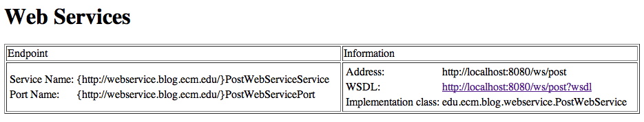

Java API for XML Web Services
Java API for XML Web Services
Introduction
La spécification jax-ws permet de construire des services web.
Un service web est un service rpc (remote procedure call) qui respecte le protocole SOAP.
Un service rpc permet de faire des appels de méthodes distantes, comme ci (presque) elles étaient locales.
jax-ws est la dernière mouture des services web en java. Bien d'autres spécifications et librairies antérieures existent.
La facilité d'utilisation est bien plus grande aujourd'hui mais les principes restent identiques.
Metro
Metro est l'implémentation de référence pour les services web en java.
On commence donc par ajouter toutes les librairies à notre projet.
<dependency> <groupId>com.sun.xml.ws</groupId> <artifactId>jaxws-rt</artifactId> <version>2.2.5</version> </dependency>
Cela permet de récupérer metro et ses dépendances.
Hello world
Dans le package edu.ecm.blog.webservice, on crée la classe PostWebService.
@WebService
@SOAPBinding(style = SOAPBinding.Style.RPC)
public class PostWebService {
public String hi(String name) {
return "Hello " + StringUtils.defaultIfEmpty(name, "unknown");
}
}
Pour metro, il faut un fichier sun-jaxws.xml dans src/main/webapp/WEB-INF
<?xml version="1.0" encoding="UTF-8"?>
<endpoints xmlns="http://java.sun.com/xml/ns/jax-ws/ri/runtime" version="2.0">
<endpoint name="PostWs" implementation="edu.ecm.blog.webservice.PostWebService" url-pattern="/ws/post" />
</endpoints>
Et la déclaration du mapping dans le web.xml
<listener> <listener-class>com.sun.xml.ws.transport.http.servlet.WSServletContextListener</listener-class> </listener> <servlet> <servlet-name>postWebService</servlet-name> <servlet-class>com.sun.xml.ws.transport.http.servlet.WSServlet</servlet-class> </servlet> <servlet-mapping> <servlet-name>postWebService</servlet-name> <url-pattern>/ws/post</url-pattern> </servlet-mapping>
Et si on démarre tomcat, le service répond sur http://localhost:8080/ws/post
En quelques lignes de configuration, nous avons mis en place notre service web.
Le WSDL sur http://localhost:8080/ws/post?wsdl est déjà très verbeux alors que notre service est simple.
Le prix du standard et de l'interopérabilité passe donc par de la verbosité et de la génération automatique.
Le client
Nous allons mettre en place un test d'intégration qui va valider le bon fonctionnement de notre service.
Afin que jenkins n'éxécute pas ces tests avec les tests unitaires, nous pouvons :
- Placer ces tests dans un package edu.ecm.blog.integration
- Exclure ce package lors des tests unitaires
<plugin> <groupId>org.apache.maven.plugins</groupId> <artifactId>maven-surefire-plugin</artifactId> <configuration> <excludes> <exclude>**/integration/*Test.java</exclude> </excludes> </configuration> </plugin>
On crée donc la classe PostWebServiceTest dans le package edu.ecm.blog.integration de src/test/java.
Pour pouvoir appeler le webservice, il nous faut générer un client à partir du WSDL.
On utilise l'outil wsimport qui permet cela. A la racine du projet :
blog > wsimport -s src/test/java -d target -p edu.ecm.blog.integration.generated http://localhost:8080/ws/post?wsdl parsing WSDL... generating code... compiling code...
Ce qui nous permet d'écrire et faire passer le test suivant.
@Test
public void hi() {
PostWebServiceService postWebServiceService = new PostWebServiceService();
PostWebService postWebService = postWebServiceService.getPostWebServicePort();
Assert.assertEquals("Hello jax-ws", postWebService.hi("jax-ws"));
}
Un peu de recul
La mise en place d'un web service est relativement aisée.
Cependant, rien que pour un hello world, il y a quelques manipulations.
Coté client on repose sur de la génération de code, ce qui rend notre client fragile face à une évolution de l'api.
Les types des paramètres et les types de retour des méthodes font également partie de l'api. On a donc souvent des classes spécialisées juste pour le webservice.
Le point positif est que notre service est accessible depuis beaucoup de languages.
La liste des billets
Nous souhaitons maintenant faire quelque chose d'un peu plus utile : exposer la liste des billets.
On aimerait reposer sur le PostService et écrire :
public List<Post> latestPosts() {
return postService.find(0, 10);
}
Cependant, comment obtenir une référence vers le PostService de notre application ?
Spring dispose d'un support pour les services web permettant l'injection des dépendances
Avec le support spring, on peut écrire :
public class PostWebService extends SpringBeanAutowiringSupport {
@Inject
private PostService postService;
public List<Post> latestPosts() {
return postService.find(0, 10);
}
}
Cependant, si on relance le tomcat, on obtient l'erreur :
...
Caused by: java.security.PrivilegedActionException: com.sun.xml.bind.v2.runtime.IllegalAnnotationsException:
2 counts of IllegalAnnotationExceptions
java.util.List is an interface, and JAXB can't handle interfaces.
this problem is related to the following location:
at java.util.List
...
JAXB est la librairie qui transforme les objets java en xml.
Visiblement JAXB n'accepte pas une interface comme type de retour de notre méthode.
Une solution possible est d'utiliser une classe de wrapping afin que la signature de notre méthode soit :
public Posts latestPosts() {
return new Posts(postService.find(0, 10));
}
Et donc la classe en question.
public class Posts {
private List<Post> posts;
public Posts() {
}
public Posts(List<Post> posts) {
this.posts = posts;
}
public List<Post> getPosts() {
return posts;
}
public void setPosts(List<Post> posts) {
this.posts = posts;
}
}
Et cette fois tomcat démarre.
En regénérant le client du service web, on peut écrire le test suivant :
@Test
public void latestPosts() {
PostWebServiceService postWebServiceService = new PostWebServiceService();
PostWebService postWebService = postWebServiceService.getPostWebServicePort();
Assert.assertTrue(postWebService.latestPosts().getPosts().size() > 0);
Assert.assertTrue(postWebService.latestPosts().getPosts().get(0).getTitle().length() > 0);
}
Malheureusement, ce test échoue avec l'erreur suivante :
java.lang.NullPointerException at edu.ecm.blog.webservice.PostWebService.latestPosts(PostWebService.java:27) at sun.reflect.NativeMethodAccessorImpl.invoke0(Native Method) ...
Malgré nos efforts, le PostService n'est pas correctement injecté dans notre service web.
L'explication est un peu technique et est liée au fonctionnement des contextes spring dans un environnement web.
Pour corriger cela, le plus simple est de rajouter les lignes suivantes dans le web.xml :
<listener> <listener-class>org.springframework.web.context.ContextLoaderListener</listener-class> </listener> <context-param> <param-name>contextConfigLocation</param-name> <param-value>WEB-INF/spring-context.xml</param-value> </context-param>
Et de copier le fichier WEB-INF/spring-servlet.xml vers WEB-INF/spring-context.xml
Cette fois, le test passe.
- Un contexte père construit par le ContextLoaderListener
- Un contexte fils par servlet spring défini dans le web.xml
Dans notre cas, afin d'avoir accès au PostService pour des requêtes passant par la WSServlet (/ws/post), il faut que le service soit défini dans le contexte père.
La bonne pratique est donc de définir les services dans le contexte chargé par le ContextLoaderListener et tout ce qui est spécifique à une servlet spring (controllers, localeResolver, viewResolver...) dans le contexte associé à la servlet.
Actuellement, nos beans sont déclarés en double, ce qui n'est pas correct.